Oct 11th, 2022 (Rot Conv verify)¶
Motivation: Play around with rotational conv layer. Does it do what it’s supposed to?
# HIDE CODE
import os
import sys
from copy import deepcopy as dc
from os.path import join as pjoin
from IPython.display import display, IFrame, HTML
# tmp & extras dir
git_dir = pjoin(os.environ['HOME'], 'Dropbox/git')
extras_dir = pjoin(git_dir, 'jb-MTMST/_extras')
fig_base_dir = pjoin(git_dir, 'jb-MTMST/figs')
tmp_dir = pjoin(git_dir, 'jb-MTMST/tmp')
# GitHub
sys.path.insert(0, pjoin(git_dir, '_MTMST'))
from model.vae import ConfigVAE, VAE
from utils.plotting import *
# warnings, tqdm, & style
warnings.filterwarnings('ignore', category=DeprecationWarning)
from tqdm.notebook import tqdm
%matplotlib inline
set_style()
from utils.process import setup_supervised_data
from analysis.sta import compute_sta
from analysis.hyperflow import *
from torch import nn
from torch.nn import functional as F
Test Rot Conv¶
x = torch.randn((13, 2, 16, 16, 24))
x.shape
torch.Size([13, 2, 16, 16, 24])
from model.vae import RotConv3d
conv = RotConv3d(co=6, n_rots=8, kernel_size=3, padding='same')
y = conv(x)
y.shape
torch.Size([13, 48, 16, 16, 24])
w = conv._get_augmented_weight()
w.shape
torch.Size([48, 2, 3, 3, 3])
x = np.arange(31)
xx, yy = np.meshgrid(x, x)
pos = np.concatenate([
np.expand_dims(xx, -1),
np.expand_dims(yy, -1),
], axis=-1)
rv = sp_stats.multivariate_normal((19, 11), 10)
rho = rv.pdf(pos)
plt.imshow(rho);
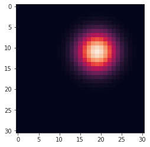
theta = np.deg2rad(30)
vx = rho * np.cos(theta)
vy = rho * np.sin(theta)
v = np.concatenate([
np.expand_dims(vx, -1),
np.expand_dims(vy, -1),
], axis=-1)
v.shape
(31, 31, 2)
rho, theta = to_polar(v)
fig, axes = create_figure(1, 2, (5, 3), 'all', 'all')
axes[0].imshow(rho)
x2p = mwh(rho < np.quantile(rho.ravel(), 0.75), theta)
axes[1].imshow(x2p, vmin=0, vmax=2*np.pi, cmap='hsv')
<matplotlib.image.AxesImage at 0x7fcb6430ba90>
x = torch.randn((1, 2, 64, 64, 1))
x.shape
torch.Size([1, 2, 64, 64, 1])
conv = RotConv3d(co=5, n_rots=8, kernel_size=31, padding='same')
conv.weight.shape
torch.Size([5, 2, 31, 31, 31])
conv._get_augmented_weight().shape
torch.Size([40, 2, 31, 31, 31])
y = conv(x)
y.shape
torch.Size([1, 40, 64, 64, 1])
w_test = []
for theta in np.deg2rad([10, 20, 30, 40, 50]):
vx = rho * np.cos(theta)
vy = rho * np.sin(theta)
w_test.append(np.expand_dims(np.concatenate([
np.expand_dims(vx, 0),
np.expand_dims(vy, 0),
], axis=0), axis=0))
w_test = np.concatenate(w_test)
w_test = torch.tensor(w_test)
w_test.shape
torch.Size([5, 2, 31, 31])
conv.weight.data[..., 0] = w_test
w_aug = conv._get_augmented_weight()
w_aug_reshape = w_aug.view(conv.out_channels, conv.n_rots, *w_aug.shape[1:])
w_aug.shape, w_aug_reshape.shape
(torch.Size([40, 2, 31, 31, 31]), torch.Size([5, 8, 2, 31, 31, 31]))
fig, axes = create_figure(conv.out_channels, conv.n_rots, (13.5, 10), 'all', 'all', tight_layout=True)
for i in range(conv.out_channels):
for j in range(conv.n_rots):
a = w_aug_reshape.detach().numpy()[i, j]
rho, theta = to_polar(np.transpose(a[..., 0], (1, 2, 0)))
x2p = mwh(rho < np.quantile(rho.ravel(), 0.75), theta)
deg = np.round(np.rad2deg(theta[rho == np.max(rho)].item()), 3)
axes[i, j].imshow(x2p, vmin=0, vmax=2*np.pi, cmap='hsv')
axes[i, j].set_title(r"$\theta =$" + f" {deg}" + f"\nker = {i}, rot = {j}", fontsize=9)
plt.show()
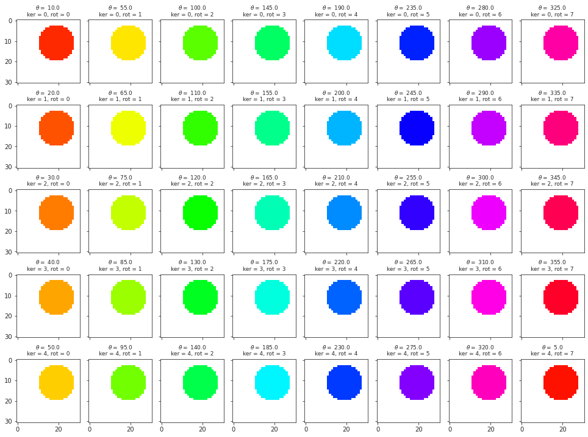
for ii, a in enumerate(w_aug.detach().numpy()):
rho, theta = to_polar(np.transpose(a[..., 0], (1, 2, 0)))
fig, axes = create_figure(1, 2, (5, 3), 'all', 'all')
axes[0].imshow(rho)
axes[0].set_title(f"i = {ii}")
x2p = mwh(rho < np.quantile(rho.ravel(), 0.75), theta)
deg = np.round(np.rad2deg(theta[rho == np.max(rho)].item()), 3)
axes[1].imshow(x2p, vmin=0, vmax=2*np.pi, cmap='hsv')
axes[1].set_title(f"{deg} deg")
plt.show()
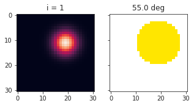
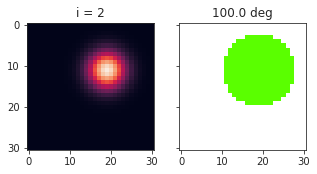
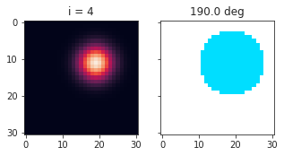
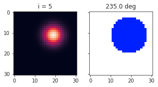
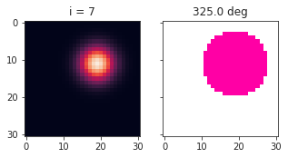
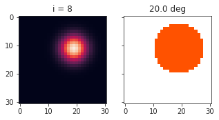
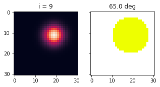
 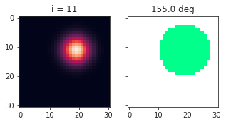
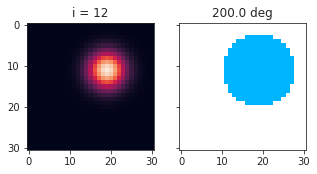
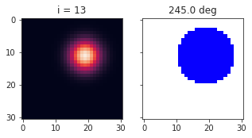
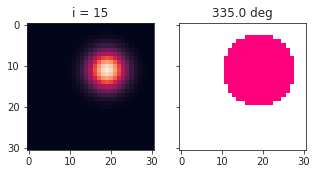
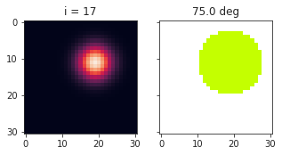
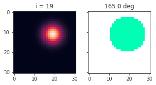
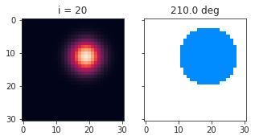
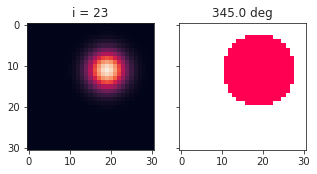
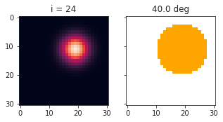
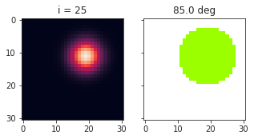
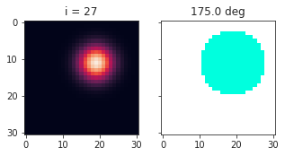
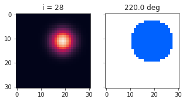
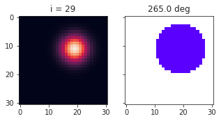
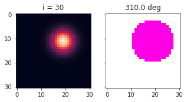
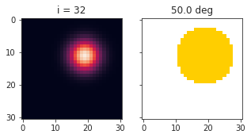
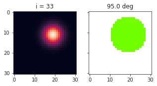
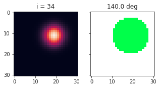
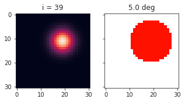
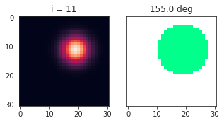
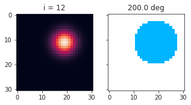
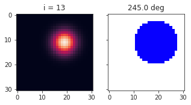
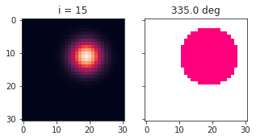
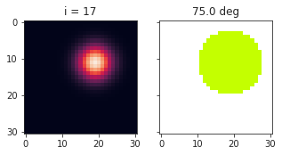
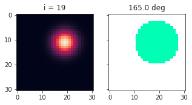
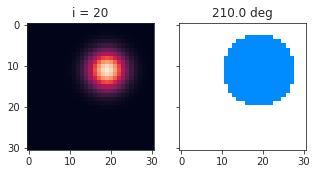
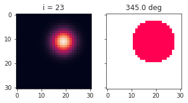
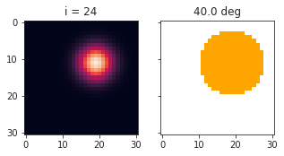
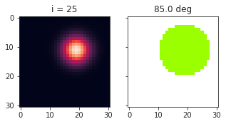
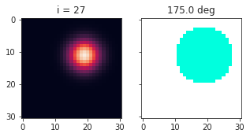
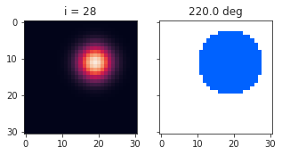
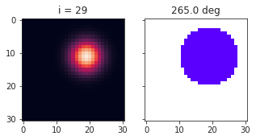
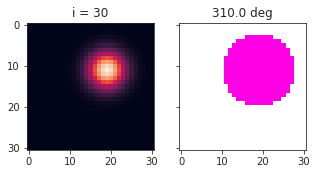
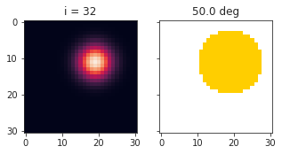
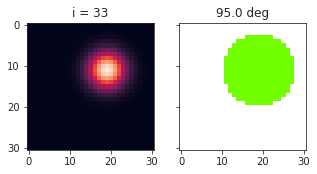
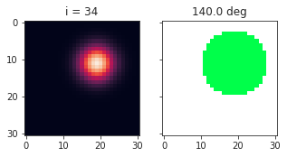
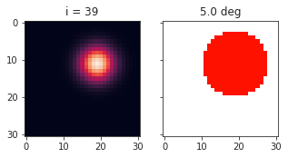
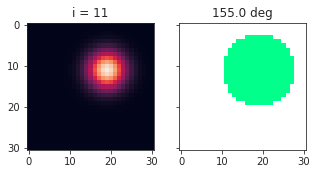
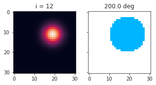
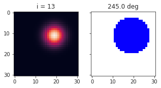
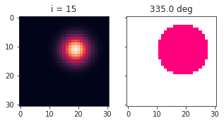
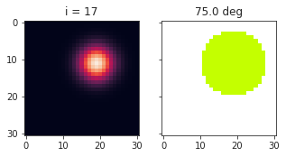
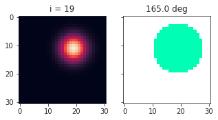
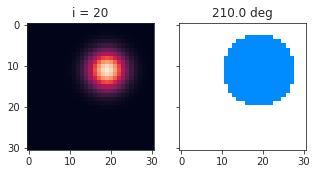
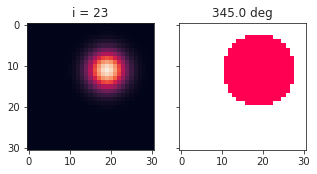
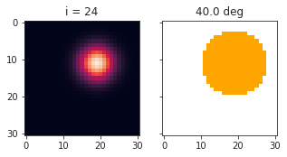
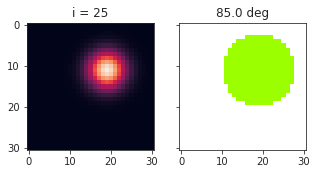
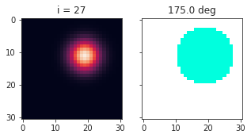
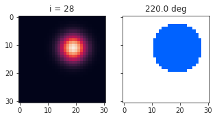
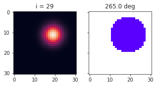
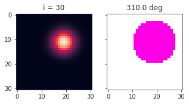
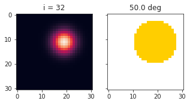
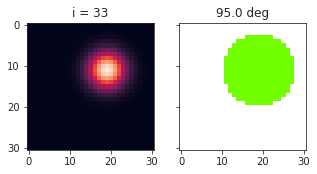
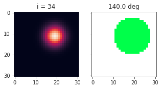
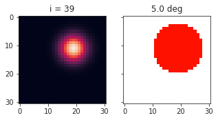